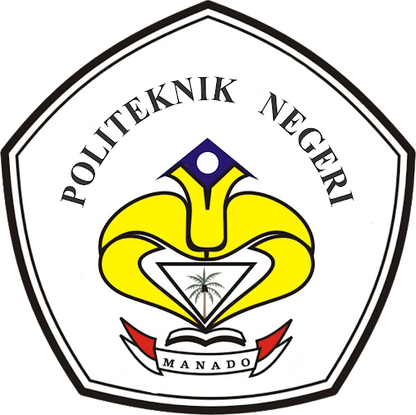

Mahasiswa
5000+Mahasiswa aktif yang belajar, berkarya, dan berkembang bersama setiap semester.

Politeknik Negeri Manado2026
Tertarik jadi mahasiswa Polimdo? Ayo bergabung dengan kami dan jadi bagian dari keluarga besar Politeknik Negeri Manado.
Tentang kami
Mahasiswa aktif yang belajar, berkarya, dan berkembang bersama setiap semester.
Pusat inovasi dan laboratorium unggulan yang mendukung riset terapan.
Pilihan program studi vokasi yang relevan dengan kebutuhan industri saat ini.
Mengapa Memilih Kami
Pendidikan vokasi dengan budaya praktik kuat, kolaborasi industri aktif, dan dukungan belajar yang relevan untuk masa depanmu.
Lingkungan kampus yang suportif untuk belajar, organisasi, dan pengembangan diri.
Skema biaya pendidikan yang terjangkau dengan peluang beasiswa untuk mahasiswa aktif.
Kurikulum berbasis praktik laboratorium yang terhubung dengan kebutuhan dunia kerja.
FAQ
Pendaftaran dilakukan secara daring melalui jalur yang tersedia, kemudian dilanjutkan verifikasi berkas sesuai jadwal penerimaan.
Tersedia beberapa program beasiswa dari kampus, pemerintah, dan mitra industri dengan syarat akademik tertentu.
Pembelajaran mengutamakan praktik laboratorium, proyek terapan, dan kolaborasi dengan kebutuhan dunia kerja.
Kampus menyediakan pembekalan karier, magang, dan jejaring industri untuk membantu kesiapan kerja lulusan.